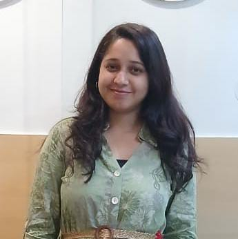

Rajpreet Kaur

Profile
B.COM from Kolhan University.
Job Profile
- Guide and help patient to various department
- Patient Coordination: Coordinate patient appointments, admission and discharge
- Receiving and facilitating the resolution of patients greivances by oral and written feedback to the patients.
- Provided excellent customer service by welcoming and assisting patients and their families.
- Effectively counseled and guided patients through the IVF process, addressing their queries and concerns. Managed the front desk operations, including appointment scheduling and record keeping.
- Maintained accurate financial records and managed accounting functions for the center.
- Regularly checks for adequate stock of forms and reorders.
- Collaborate with other departments, such as medical records and patient services, to steamline workflows and enhance the patient experience.
Summary
Dedicated and highly skilled healthcare professional with a strong background in customer service, administrative, and healthcare operations. Seeking the position of Floor Coordinator and Manager at a reputable hospital to leverage my experience and skills in ensuring efficient operations, patient satisfaction, and maintaining the facility's positive public image.
Experience
- Guide and help patient to various department.
- Patient Coordination: Coordinate patient appointments, admission and discharge.
- Respond to patient concerns timely and ensure patient satisfaction.
- Greet VIP patients and direct them to examination rooms.
- Handling daily OPD and IPD patients and coordinating with the floor staff to run the OPD and IPD smoothly as well as to reduce patient waiting time.
- Managing phone calls and correspondence. Scheduling meetings to discuss Patients needs and feedback.
- Receiving and facilitating the resolution of patients greivances by oral and written feedback to the patients.
- Collaborate with other departments, such as medical records and patient services, to steamline workflows and enhance the patient experience.
- Worked as Home Science Teacher in Dayawati Modi Public School, Modinagar, Ghaziabad from August 2005 to March 2006.
Oct 22- till Kailash Hospital & Heart Institute Public Relation Officer
- Guide and help patient to various department.
- Managed both front and back-office operations, ensuring a smooth workflow and efficient patient care. Handled administrative tasks, including patient registration, insurance verification, and appointment scheduling.
- Maintained accurate financial records and managed accounting functions for the center.
- Extensively using “VAST” billing software for patient medical invoicing.
- Provided direct client care, Patient history, clarification, and documenting everything int the electronic medical record.
- Regularly checks for adequate stock of forms and reorders.
Jul 2018- Sep-2022 Front and Back Office, Accountant Drishti Diagnostic & Imaging Center, Jamshedpur
- Provided excellent customer service by welcoming and assisting patients and their families.
- Effectively counseled and guided patients through the IVF process, addressing their queries and concerns. Managed the front desk operations, including appointment scheduling and record keeping.
- Extensively used Practo software for patient previous or current medical history, online appointments and invoicing.
Nov 2014- Apr 2018 Sparsh IVF Center Jamshedpur Receptionist and Counselor
EXPERTISE
- Strong Communication
- Prioritization and Organizational Skills
- Exceptional Presentation Skills
- Customer Service Excellence
- Proficient in Computer Applications
- Ability to Work Independently
LANGUAGE
- English
- Hindi
- Punjabi